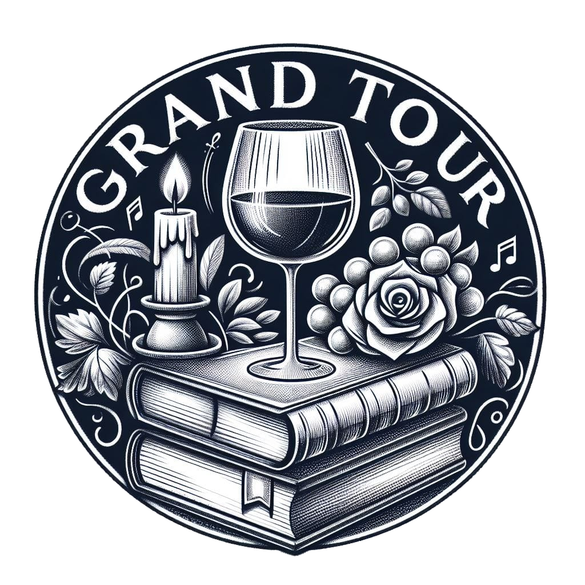
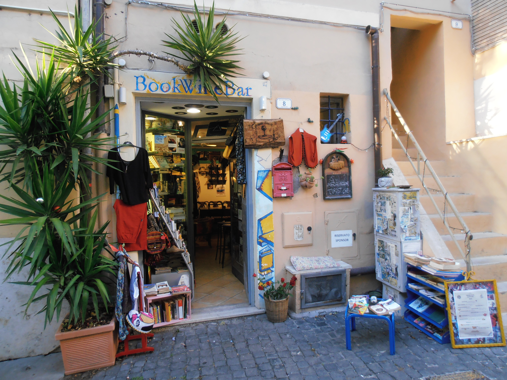
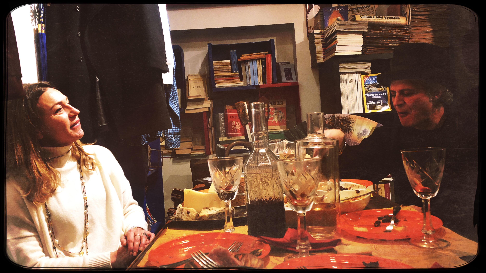
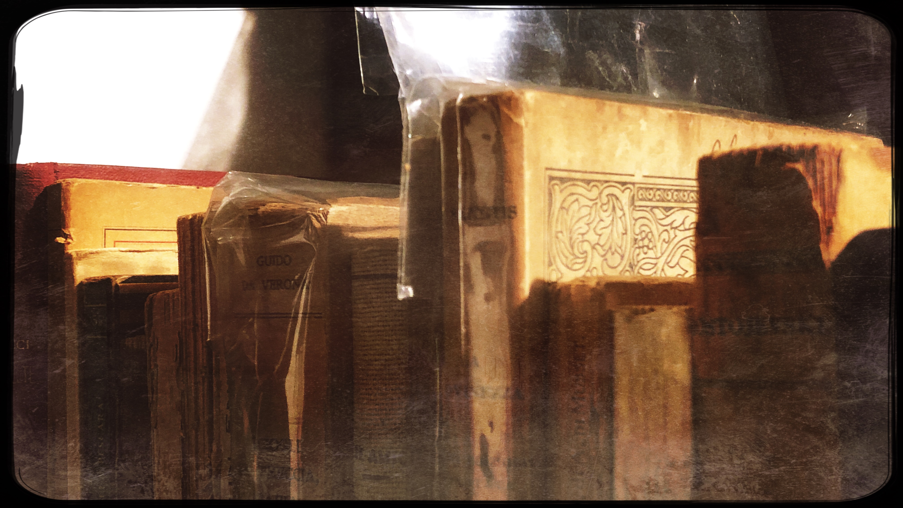
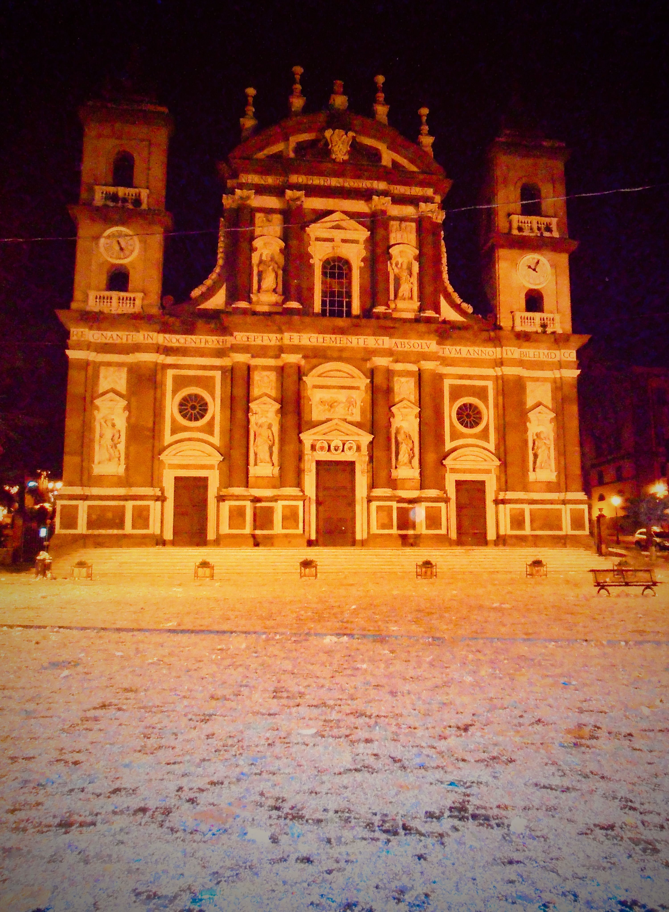
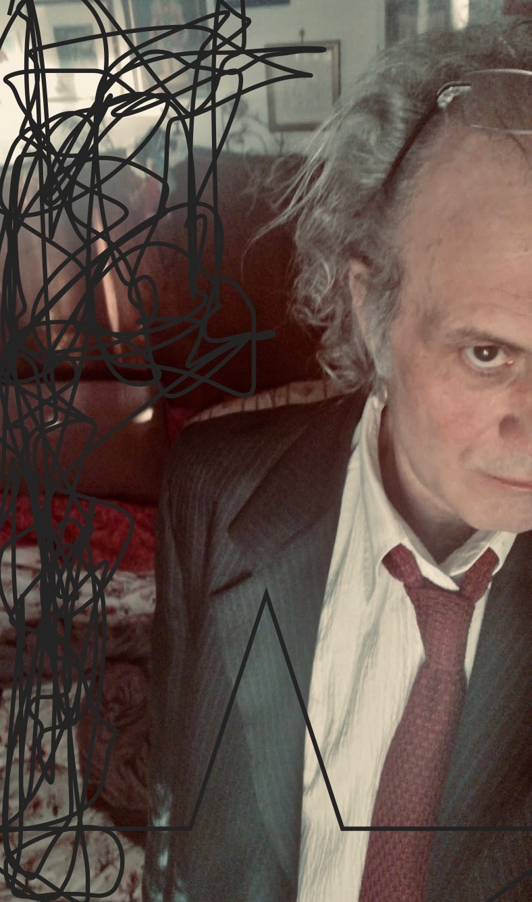

Cosa è Grand Tour

Il Grand Tour era il viaggio di formazione della nobiltà europea nell’epoca di una modernità assetata di classicismo. Grand Tour oggi è un progetto multiforme e articolato, suscettibile di continui cambiamenti eppure coerente, aperto a collaborazioni purché conformi alla propria impostazione. Al momento, comprende il Grand Tour BookWineBar di Frascati, il blog di approfondimenti culturali Scritture - Decostruire l’attualità, le escursioni guidate nel territorio del Mistery Tour: la Città Tuscolana, nonché gli Incontri realizzati nel locale.

Grand Tour BookWineBar

La prima, unica e vera osteria letteraria di Frascati. Posto caratteristico per quanto inconsueto, presidio di quartiere e punto attrattivo dell’area, luogo di ritrovo e di consultazioni, è un bar, una libreria, un circolo: un piccolo grande spazio che si propone quale tappa di qualsiasi viaggio possibile. Pubblicazioni scelte, oggetti e vestiti vintage, prodotti tipici e pregiati, laboratorio di produzioni culturali, con particolari attenzioni alla filosofia, alla poesia e alla musica, dove vengono presentati contenuti che trovano spazio su Scritture e su Musiche. È gestito dallo scrittore e musicista Claudio Comandini, figlio d’arte di una lunga dinastia di osti ed esponente di spicco dell’intellighenzia ribelle capitolina. Presso il centro storico, a Largo Duca di York 8, immediatamente riconoscibile dai murales d’ingresso, realizzati dal pittore Stefano Salvi.

Libri che sbocciano in volo e omaggi decostruzionisti alle Colonne d’Ercole del Teatro delle Acque di Villa Aldobrandini introducono al locale dove, rigorosamente collocati su scaffali che già rappresentano un Catalogo, è possibile scovare migliaia di libri, anche antichi e in lingue straniere, senza escludere dischi e fumetti, nonché un assortita scelta di vestiti e oggetti vintage.

Tra un bicchiere di Frascati bianco e di rosso dei Castelli, tisane e tè riccamente assortiti, drink vari, prodotti tipici, aperitivi creativi, si può partecipare agli Incontri, che comprendono conferenze, performance e gli appuntamenti settimanali Laboratorio filosofia (giovedì), Aperilibro ad alta voce (venerdì), Karaoke paradise (sabato), Risiko e altre battaglie (domenica), nonché le visite guidate del Tuscolo Mistery Tour. Completano le suggestioni dello spazio una ricca galleria di maschere, prevalentemente africane, e un’antica grotta vinaria con originali allestimenti.

Scritture - Decostruire l’attualità
Scritture - Decostruire l’attualità è una rivista digitale che si propone di esplorare le diverse declinazioni della scrittura, con attenzioni a differenti tipi di testo (narrativo, poetico, saggistico, pubblicistico, digitale), a diverse forme di tessitura (musica, arte, fumetto, teatro, cinema, performance), a diverse modalità di incidere (nella storia come sul presente). Si ispira apertamente a un’etica della conoscenza e non al politically correct, esclude senza riguardi idiozie alla moda e provocazioni fini a se stesse per cercare di accogliere posizioni sensate, documentate e argomentate e quindi di favorire la critica più accanita e le opportune dispute di idee.

Scritture pubblica materiali originali e ripropone testi significativi, sollecita e accoglie collaborazioni, diffonde informazioni sulle diverse aree disciplinari e aggiornamenti sugli strumenti professionali dei mestieri creativi. Le Musiche sono trattate in una specifica sezione che, viaggiando per luoghi, epoche e stili, si propone di promuovere quanto trova spazio negli Incontri del BookWineBar, mentre a loro volta le visite guidate del Tuscolo Mystery Tour tendono a presentare contenuti proposti nel sito. È inoltre prevista la realizzazione di pubblicazioni cartacee e altri prodotti editoriali.
Mistery Tour: la Città Tuscolana

Tuscolo è più antica di Roma e ancora oggi la sovrasta, le memorie storiche dell’area sono immense. Nel viaggio alla scoperta di quelle che oggi sono conosciute come le città dell’eccellenza enogastronomica, possiamo incontrare le rovine di epoca imperiale e il Museo del vino presso Monte Porzio, il medioevo e l’Abbazia di San Nilo a Grottaferrata, la città di Frascati con la sua incantevole urbanistica e le magnifiche ville barocche che la costellano. A richiesta, è possibile attivare anche la visita dei borghi che sorgono sulle sponde dei laghi di Albano e Nemi, incastonati nei boschi ai piedi di Monte Cavo, la più alta montagna della zona. L’area tuscolana e i suoi dintorni non avranno più segreti, grazie ai servizi di trasporto e turismo offerti da un team professionale e affiatato. I testi di riferimento del tour sono forniti su Scritture.
Claudio Comandini. Autoagiografia non breve ma spiritosa

Nasco a Frascati nel 27 febbraio del 1967, mentre i Pink Floyd a Londra pubblicano il loro primo 45 giri. Lo stesso giorno, nel 1932 nasce l’attrice Liz Taylor; nel 1902, lo scrittore John Steinbeck; nel 1861, il filosofo e antroposofo Rudolf Steiner; indietro di qualche secolo, all’inizio della datazione cristiana, nel 274 troviamo, altrettanto originale e rigoroso, Costantino imperatore. Discendente di famiglie impegnate nella forse inutile seppur gloriosa unificazione del Paese, vengo allattato nell’osteria di famiglia, che lavora con una clientela internazionale, entrando così prematuramente in contatto con le musiche e le culture del mondo attraverso i canti degli ubriachi. Appena possibile, mi appassiono al mondo classico, a quello biblico e a quello dei fumetti, così come alle scienze sperimentali e alla teoria degli insiemi. Compio l’istruzione primaria presso istituti cattolici e, nonostante rischi di essere cacciato da scuola ogni giorno per la scarsissima disciplina e riceva anche minacce di scomunica, divento direttore del giornale dell’oratorio salesiano di Capocroce. Al Liceo scientifico statale di Grottaferrata mi interesso di arte e sovversione, studio musica da autodidatta e scrivo versi di nascosto, e nell’anno scolastico 1983-84 ricopro la carica di rappresentante d’istituto. Dopo un grand tour europeo in autostop, mi iscrivo nel 1987 alla facoltà di Filosofia dell’Università di Tor Vergata.
All’Università studio con docenti come Mario Perniola, ordinario di Estetica, uno dei filosofi e dei saggisti contemporanei più decisivi, e Aurelio Simone, ordinario di Storia della filosofia italiana, pioniere nell’uso dell’informatica per le scienze umanistiche. Partecipo nel 1990-1991 al corso di giornalismo promosso dalla rivista Avvenimenti diretta da Claudio Fracassi. Studio armonia, canto da tenore con le corali di Monte Porzio Catone e di Grottaferrata, sviluppo uno stile recitativo personale, e nel 1992 esordisco con un primo progetto di poesia e musica. Mi dedico alla politica con prossimità al PCI, candidandomi anche alle amministrative del 1988, mi colloco in dialogo con ogni componente culturale e sociale, svolgo attività giornalistica per le testate dell’area tuscolana, a Roma faccio parte del Laboratorio Aperto di Ricerca Poetica di Roma, organizzo eventi qua e là. Nel 1997 mi laureo con lode sotto la direzione professori Antimo Negri (Storia della filosofia) ed Emerico Giachery (Storia della letteratura italiana moderna e contemporanea), discutendo la tesi Boutroux e Montale: Poesia e contingenza, che lo stesso anno vince il Premio Internazionale Eugenio Montale e della quale Maria Luisa Spaziani scrive: «Necessità, contingenza, possibilità, miracolo, sono le nozioni assiali del discorso, dove si intreccia un complesso di motivi di forte attualità nel dibattito contemporaneo».
Dopo aver fatto l’oste fino ai trent’anni, occupandomi di enogastronomia prima che il settore andasse di moda, lascio il lavoro presso l’azienda di famiglia. Privilegiando la militanza culturale, mantengo autonoma la mia particolare inclinazione alla ricerca. Mi interesso di meditazione, alchimia e arti marziali, e frequento i corsi di Animazione del pensiero di Nello Mangiameli. Inizio a suonare la tromba e faccio parte della Titubanda di Roma. Insegno lingua e cultura italiana agli esuli politici di ogni nazionalità in collaborazione con la Casa dei Diritti Sociali e con l’Upter-Università Popolare di Roma. La mia attività letteraria riceve fra il 1999 e il 2001 segnalazioni al Premio Europeo Città di Frascati, al concorso 2000 versi/verso il 2000 del Sindacato Nazionale Scrittori (giuria composta da Vito Riviello, Maria Jatosti, Francesco De Girolamo, Eleonora di Fortunato, Carlo Livia, Bianca Menna), vinco una Slam Poetry condotta da Lello Voce e diversi altri premi. Nel 2001 pubblico un estratto dalla tesi di laurea (Philosophema nuova serie a.1 n.0 - il testo integrale è tuttora inedito) e il libro Un giorno lungo un sogno (Noubs 2001), «teatro d’idee» (Massimo Pamio) che comprende poesie scritte in un percorso di quindici anni e si snoda attraversando fasi del giorno, mari del nord e porti del sud, rivelando «spiccata capacità di sintesi, eleganza del fraseggio, essenzialità delle immagini» (Arnaldo Colasanti).
Nella mia ricerca musicale, nella quale mi dedico alla tromba, agli strumenti elettronici e alla voce, esploro i rapporti tra parola e suono e quindi i linguaggi dell’improvvisazione; il componimento Guerra Virtuale Reale è assegnatario a Tollo del premio Ad un passo dalla poesia 2002. Nel 2003 contribuisco alla catalogazione di una biblioteca di autori italiani di filosofia diretta da Massimo Cacciari nel palazzo Annibaldeschi di Montecompatri. Nel 2004-2006 scrivo e sono redattore con la testata Controluce, con cui realizzo scritti di storia del territorio vista nel contesto di quella universale, politica internazionale al tempo della crisi, musica e arte. Ottengo l’iscrizione come pubblicista all’Ordine dei giornalisti. L’attitudine al ‘vedere’ mi porta a coltivare la fotografia.
Nel 2006 lascio Roma e i Castelli Romani e pubblico il romanzo Basso Impero (Sovera) che lavora sul doppio registro di denuncia sociale e sperimentazione linguistica. La performance con adattamenti del testo e mie composizioni, in cui suono tutti gli strumenti, è finalista nel 2008 al premio Libera i Libri di Poggibonsi e nel 2010 vince il premio OneManBand di Bologna. Del libro scrive Marco Benedettelli: «L’autore mescola il lirismo più interiore al grottesco più sfrenato, la lucida visione del nulla con tutti gli orpelli grondanti di simboli che la riempiono, le esplosioni interiori che distaccano da terra con l’ovattata deflagrazione dell’implodere di un mondo percepito come infinita periferia. […] Le storie si intrecciano e si toccano tra loro, i capitoli e i paragrafi si accostano pagina dopo pagina come in un mosaico dai colori grondanti e dalle forme gonfie, da Basso Impero appunto. […] Un libro che va assolutamente letto, senza esagerare, quanto meno se si vuole ridere alla facciaccia di tanta insulsa letteratura dell’alta classifica di oggi, e soprattutto della nostra decadenza.»
Gironzolando tra l’Etruria e l’Eurasia, con soggiorni a Berlino e Istanbul, e quindi in maremma, dal 2007 mi ritrovo a vivere sull’appennino bolognese con l’assurdo cagnone conosciuto come il Saro, cercando di verificare da una prospettiva particolarmente selvatica se davvero esista una metropoli diffusa. Frequento assiduamente la Scuola Popolare di Musica Ivan Illich di Bologna, numerosi seminari di musica d’insieme, maestri come Tristan Honsinger, Dave Douglas, Butch Morris, Phil Minton, Giancarlo Schiaffini, Patrizio Fariselli. Nel 2009 pubblico registrazioni tra performing poetry, istant composition e suggestioni geopolitiche, realizzate anni prima con Joe Casagrande, Francesco Ranieri e Roberto Bellatalla, nel CD audio Parachuting Nonsense! (Setola di Maiale); ne scrive Andrea Laino: «colonna sonora di un film lungo più di una decina d’anni di storia personale e collettiva […] sul filo di tematiche che vanno dalla pazzia (Nof4) al crollo del muro di Berlino (1989 – Tutto più facile), dal conflitto israeliano-palestinese (Terra negata) al diario di viaggio a Istanbul (Eurasia)». Mosso da «qualcosa che richiama la musica concreta passando attraverso il jazz» (Matteo Uggeri), suono con numerose formazioni. A Bologna al 2009 al 2011 collaboro con Daniele Giannotta alla realizzazione del Festival di produzioni musicali indipendenti Spore, e nel 2011 entro a far parte del collettivo Improvvisatore Involontario fondato da Francesco Cusa, con cui collaboro e suono per un paio d’anni.
Dal 2012 i miei interessi verso l’indagine storica e la critica del presente, i rapporti tra scienza e arte e quelli tra culture e religioni, trovano spazio sul blog personale, inizialmente chiamato Decostruire l’attualità, che si accompagna all’attività del gruppo di discussione Scritture sul social network professionale Linkedin, in aperta controtendenza con le apparentemente irrinunciabili volgarità social di chiacchiere insipide e melassa emotiva. La scrittura online, per quanto continui a rappresentare una fase intermedia del lavoro complessivo, mi suscita particolare interesse per le possibilità di assiduo assestamento e di interazione creativa che può offrire, valorizzando attraverso i suoi aspetti congiunturali la processualità di uno scrivere inesauribile. Strade di Fener, che attraversa le suggestioni del quartiere greco di Istanbul, vince il premio dello Scriba Festival-Narrazioni di viaggio della Bottega Finzioni di Carlo Lucarelli. Condensando un lungo interesse verso il medioevo romano, realizzo il saggio storico I tre pontificati di Benedetto IX, finalista l’anno successivo al premio Associazione Nazionale del Libro-CNR. Approfondendo il lavoro di scrittura e di ciò che la qualifica, preciso le mie competenze di editor, sempre nel 2012 curo Il primo giorno di lavoro (Noubs) antologia di trenta racconti su precariato e dintorni, con scritti di Susanna Camusso e Ascanio Celestini, mentre l’anno successivo, dopo lunga censura, viene pubblicata la raccolta di racconti di fantapolitica La notte in cui fu clonato il presidente (Noubs), di cui scrivo una storia e il saggio introduttivo. Inoltre, svolgo attività di bibliotecario presso Grizzana Morandi, nella cui parrocchia tengo corsi popolari di filosofia in collaborazione con il teologo don Giuseppe Ferretti. Mantengo rapporti di buon vicinato con i Frati di Monte Sole. Troppo religioso per gli atei, eccessivamente laico per i credenti, decido un’altra volta di farmi un giro.
Nel 2015 soggiorno a Berlino e non è niente male, senonché il capitalismo ha vinto, il conto è salato, il doposbronza pesante. Dedico a quella che avevo pensato quale città foresta, e ritrovo come città virtuale, un testo tra autofiction e personal essays tuttora inedito; resta inedito anche un saggio di geofilosofia sulle guerre globali nonché il mio più volte annunciato secondo libro di poesie. L’anno successivo, il blog evolve in Scritture, che pubblica anche scritti di altri autori; l’intento è quello di esplorare le diverse declinazioni della scrittura, ponendo attenzione tanto ai contenuti quanto allo stile. Ne scrive Helga Schneider: «Ammiro davvero la tua scrittura, intelligente, colta, ma anche molto comprensibile per tutti (o quasi).»
Progetto viaggi ovunque. Tuttavia, le circostanze mi fanno precipitare poco convintamente a Frascati, dove resto a vivere pur attuando cambiamenti radicali rispetto alla situazione precedente. Già che ci sono, il sempre valido Basso Impero, che avevo precedentemente rifiutato di presentare, diventa finalista al premio Castelli di Scrittori; quindi, mi candido alle elezioni amministrative del 2017 per il Centro Democratico, senza aggiudicarmi medaglia alcuna. Non sono più di una sinistra ormai inesistente, ma nemmeno posso diventare di una destra che non è niente. Per non perdere di vista i classici frequento l’Accademia Vivarium Novum diretta a Frascati da Luigi Miraglia, per non dimenticare i miei contemporanei collaboro a Roma con l’associazione culturale EscaMontage di Iolanda la Carrubba, per non stare troppo con soli italiani faccio la guida per l’azienda di incoming turistico Casale Minardi.
Durante la pandemia del 2020 me la passo alla grande, e pubblico il libro Aggredior Virus. I migliori giorni della nostra vita (Mondo Nuovo Edizioni), che spiega come uscire dalla crisi e dall’emergenza pur laddove ciò a nessuno sembra interessare. Ne scrive Giulia Bertotto: «Dal caos di tamponi, mascherine, vaccini sperimentali, no vax, test sierologici, Comandini non si fa confondere e riesce a tenere le fila delle ragioni di tutti gli attori in campo, dando sempre un respiro spirituale, quasi ultamondano, agli avvenimenti. Sull’origine artificiale o naturale del Sars-coV-2, tra la paranoia dei complottisti e la certificazione di ufficialità ad ogni costo, sceglie di pagare il prezzo del pensiero e dell’ipotesi senza certezza.» Ad ogni modo, pur cercando quanto possibile di realizzare qualcosa di cui ne valga davvero la pena, nell’epoca della comunicazione che tutto fagogita nell’insignificanza, una mia collocazione risulta particolarmente complessa. La contingenza a cui dedicai la tesi di laurea, e che ho esplorato sin dove potevo, ha assorbito ogni aspetto del reale. Tuttavia, nessuno ne capisce più il senso. Definitivamente, l’ignoranza è la forza che regge il mondo, occorre rinnovare le strategie di diffusione dei saperi e io sono incapace di trovarmi un padrone. Metto insieme le cose che so fare e, dopo lunga gestazione, nel 2022 inauguro il Grand Tour BookWineBar presso il borgo San Rocco di Frascati. Un’altra volta ancora, nuove pagine si aprono.
La mia scrittura, elogiata laddove «sfiora la realtà con la lama di un coltello, fino a reciderne il superfluo […], sorprendendoci, straniandoci» (Massimo Pamio), e per «l’abilità con cui la vis polemica di notevole efficacia di coniuga con la sapienza compositiva» (Sindacato Nazionale Scrittori), nasce da «un’ampia spirale di appassionate avventure intellettuali attraverso non soltanto le contrade d’Europa, o i suggestivi ipogei dove regnano le Madri e gli archetipi, ma anche attraverso le filosofie d’oriente ed occidente, la vecchia e la nuova scienza, la musica direttamente praticata.» (Emerico Giachery). L’intersezione di numerosi percorsi porta quindi la mia scrittura, che concepisco come atto di pensiero, ad attraversare continue revisioni per precisarne contenuti e stile. Così, per quanto prolifico nella produzione, ho bisogno tanto di costanti aggiornamenti quanto di periodi di quiescenza, e sono piuttosto parco nel rendere pubblico a mezzo stampa il mio lavoro. Lo spiccato interesse per le questioni controverse e la scarsa attitudine al compromesso, nonché il culto del labor limae e delle lunghe decantazioni, non mi hanno impedito di ottenere opportuni riconoscimenti. E il sasso che ho lanciato non è ancora caduto.